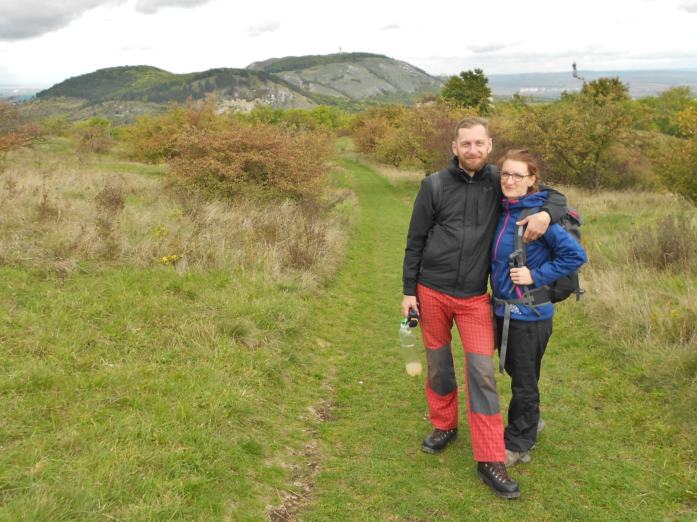
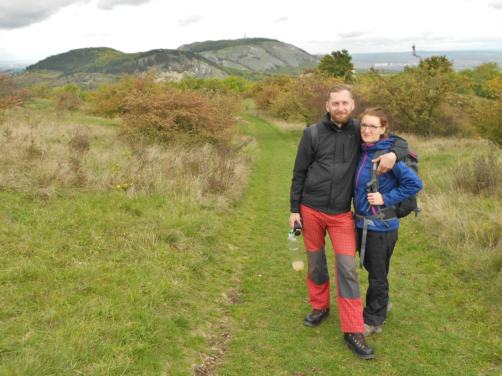

❤ Zjistili jsme, že když je něčeho hodně a rychle, tak nám v tom není dobře. Ženich, ten to věděl odjakživa a slow je jeho “default” nastavení. A taky je ten introvert, jehož tajné (a nevyslyšené) přání byla svatba maximálně ve čtyřech. To úplně neprošlo u nevěsty. Nicméně ta díky škole života zjistila, že rychle a zběsile jí přináší víc škody než užitku a že méně je někdy více. Osud jí chytře přivedl do cesty muže, vedle kterého se může učit zpomalovat. A když jsme všechno sečetli dohromady, vyšla nám z toho Po-malá svatba.
❤ Otevřená zahrada je pro náš den místem víc než příznačným, neboť tu chceme i náš sňatek OTEVÍRAT (nikoli uzavírat jak bývá zvykem). Chceme tu projít přechodovým svatebním rituálem a budeme poctěni, když budete svědky tohoto našeho životního kroku.
❤ V zahradě jsme byli spolu poprvé 17.6.2018 na swingové tančírně a bylo nám tak dobře, že ještě téhož večera nevěsta pronesla, že by se jí jednou v zahradě líbila svatba. A Vesmír to slyšel. Zdaleka však netušila, že o rok později, 7.7.2019 ji její milý skutečně požádá o ruku na jeho nejoblíbenějším místě na světě - v posteli.
❤ Stejně jako zahrada je nám sympatická i Nadace Partnerství, která ji provozuje a je jednou z největších environmentálních nadací v ČR. Jak někteří možná (ne)víte, ženich dlouhodobě podporuje několik neziskových organizací, je milovník lesa, nadšený pěstitel a muž, co sází stromy. Nevěsta je zase odhodlanou propagátorkou bezobalového stylu života. A tak jsme si vybrali Otevřenou zahradu nejen proto, že je to úžasná zelená oáza v centru Brna, ale protože ladí s naším stylem života.
❤ V zahradě bude probíhat celý svatební den, tj. jak obřad tak hostina.
❤ Přímo v areálu zahrady je k dispozici pouze 6 parkovacích míst, ale většinu budeme rezervovat pro nejbližší rodinu, cateringovou společnost a hudebníka. Pokud nemůžete nechat auto doma, zkuste Parkovací dům Domini Park (15min pěšky do zahrady) nebo Garáže u Janáčkova divadla (19min pěšky do zahrady). Pokud pojedete MHD, tak tramvají č. 4 na Obilní trh.
❤ Prostor je bohužel nutné opustit nejpozději ve 22 hodin z důvodu nočního klidu, jelikož se zahrada nachází v centru města. Pro párty chtivé hosty bude zajištěno blízké místo, kam se po 22 hod přesuneme a budeme pokračovat ve svatebním veselí.
❤ Pro mimobrněnské hosty bude zajištěno přespání. V merku máme předběžně útulný penzion v duchu 30.let Klafé nedaleko zahrady.
❤ Vzhledem k tomu, že celý obřad a hostina budou probíhat v zahradě, rádi vás uvidíme v polo-formálním oblečení. Mrkněte na web zahrady, ať máte představu na co se připravit. V zahradě budou k dispozici zahradní židličky, piknikové deky a lehátka vybízející k línému povalování se pod stromy. A to si žádá pohodlné oblečení.
❤ Ženy s letními šaty nebudou mít dilema, u mužů jsou více než vítané společenské bermudy. Případně si vemte oblečení na převlečení, my sami se posléze budeme převlékat ryze letního oblečení. Pojďte se s námi procházet bosky po vlahé letní trávě!
❤ Jelikož nevěsta miluje staré časy, ponese se svatba ve vintage retro stylu. Než si lámat hlavu darem, přijďte ozdobení retro doplňkem (dřevěný motýlek, kšandy, puntíkaté oblečení, slamák, paraplíčko, vějíř, proutěný košíček, juta, krajka...). Fantazii se meze nekladou a jakákoliv snaha bude kvitována s povděkem!
❤ K dispozici bude památeční Svatební kniha, do které nám můžete zapsat moudré (ne)místné, (ne)vyžádané rady a přání. Není proto třeba klasických blahopřání, v knize je budeme mít všechny pohromadě a doplníme fotografiemi z Polaroidu. Děkujeme!
❤ Svatba je jeden z mála rituálů, který se v dnešní společnosti zachoval. A co bude jiného na té naší? K celému dni chceme přistupovat nejen jako k veselce, ale jako k vědomé iniciaci do nové životní etapy. Náš obřad povedou duchovní průvodci, kteří nám vědomě pomohou v přechodu od já a ty ke společnému my. Více o přechodových rituálech se můžete dočíst zde.
❤ Na každém stole bude připraven dezinfekční gel na ruce, případně přijmeme další nezbytná opatření dle vývoje situace.
❤ Pokud by nastala nějaká organizační změna, budeme vás zavčas informovat.


 
